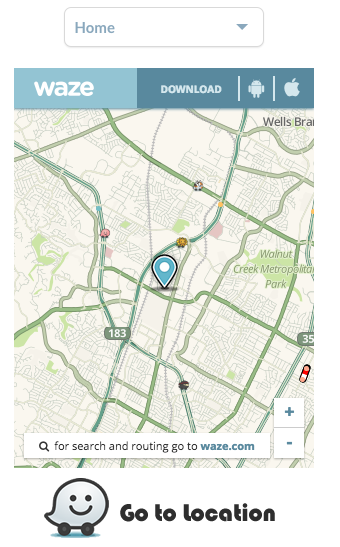
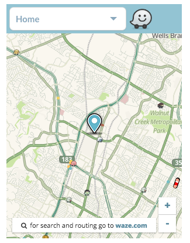
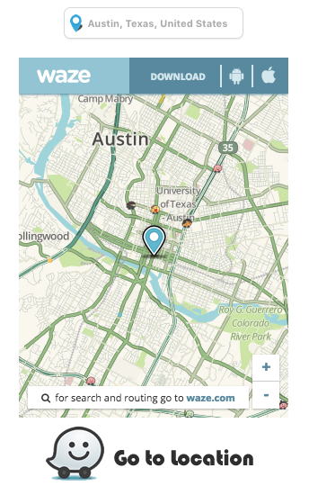
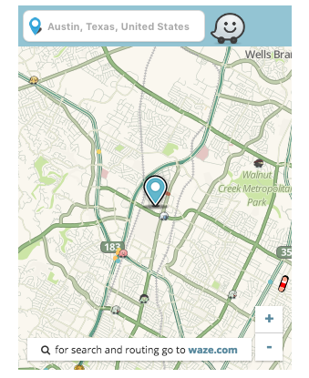
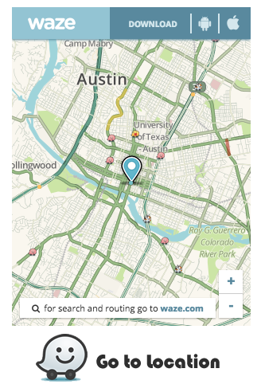
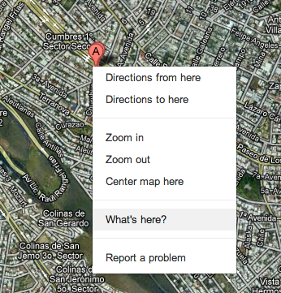
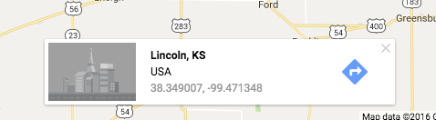

Waze was the “App of the Year” 2012 on the Apple App Store. This Waze plugins works on Mobile and Desktop. On Mobile devices it will ask to open the Waze App or Install it, on Desktop it will open the Waze Live Map and if GPS is enabled it will show the route on the Live Map. Easily share your location with Waze. It's super easy to install. It works with HTML, Javascript and JQuery and it has been developed in a way that with basic knowledge on web it can be easily implemented.
How does it work?
There are 3 Modals available, each with different configuration options.
1. Dropdown select Location
1.1 - First copy the HTML portion of the code, you can add more options by simply pasting another li element, be sure to add the new Latitude, Longitude and optionally an icon.
<div id="WazeWidget">
<div id="WazeWidgetDiv" class="WazeWidget-wrapper-dropdown" tabindex="1">
<span>Home</span>
<ul class="dropdownWW">
<li><a href="#" onclick="setLocation('30.394602','-97.724419')"> <!--First Latitude then Longitude-->
<i class="fa fa-home"></i>Home</a>
</li>
<li><a href="#" onclick="setLocation('30.284546','-97.737808')"> <!--First Latitude then Longitude-->
<i class="fa fa-university"></i>University</a>
</li>
<li><a href="#" onclick="setLocation('30.267423','-97.712746')"> <!--First Latitude then Longitude-->
<i class="fa fa-users"></i>Friends</a>
</li>
</ul>
</div>
</div>
If you need to find out the Lat and Long of a specific location, take a look to the A&A section at the
bottom of this page.
1.2 - Then copy the Javascript file
<script type="text/javascript" src="[Location Or Path]/WazeWidgetLibrary/WazeWidget.js"></script>
Replace [Location Or Path] with the path to the file.
1.3 - And Finally Initialize it
<script>
$("#WazeWidget").WazeWidget( { Modal:"Dropdown" }); //add more li to ul class="dropdown" to add more options
/* $("#WazeWidget").WazeWidget( { Modal:"Dropdown", View:"Compact" }); optionally add 'Compact' view to widget */
</script>
How it would look like
Normal View

Compact View

2. Free Input Location
1.1 - First copy the HTML portion of the code, for the Free Input Location just copy the empty div.
<div id="WazeWidget"></div>
1.2 - Then copy the Javascript file
<script type="text/javascript" src="[Location Or Path]/WazeWidgetLibrary/WazeWidget.js"></script>
Replace [Location Or Path] with the path to the file.
1.3 - And Finally Initialize it
<script>
$("#WazeWidget").WazeWidget( { Modal:"FreeInput", InputPlaceHolder:"Austin, Texas, United States", Lat:"30.267153", Long:"-97.7430608", GoogleAPIKey:"" });
/* $("#WazeWidget").WazeWidget( { Modal:"FreeInput", InputPlaceHolder:"Austin, Texas, United States", Lat:"30.267153", Long:"-97.7430608", GoogleAPIKey:"", View:"Compact" }); */
</script>
Note: Without the Google API Key it could work locally, but if you are testing on Staging, Production or on your server, you would need the API Key. Check out the "Some tips and additional Info" at the bottom of the page for info on how to get it. It's Free.
How it would look like
Normal View

Compact View

3. And Simple Location
1.1 - First copy the HTML portion of the code, for the Simple Location just copy the empty div.
<div id="WazeWidget"></div>
1.2 - Then copy the Javascript file
<script type="text/javascript" src="[Location Or Path]/WazeWidgetLibrary/WazeWidget.js"></script>
Replace [Location Or Path] with the path to the file.
1.3 - And Finally Initialize it
<script>
$("#WazeWidget").WazeWidget( { Modal:"SimpleLocation" , Lat:"30.267153", Long:"-97.7430608" });
</script>
How it would look like
Normal View

Some tips and additional Info
How do I get the exact coordinates?
Use Google Maps, search for the location you want to share. Once you are on the exact position, with your mouse right click the map, and the following submenu will appear.

Select 'Whats here?', just after you’ve done that, a Google Maps Information Bar will add the Latitude and Longitude of that specific point, like this:

What if user is not on a mobile device, or hasn’t downloaded Waze yet?
If the user is on a mobile device, it will open the Waze app and the Route.
If the user is on a mobile device and doesn’t have Waze, it will send him to the App Store or Google Play.
If the user is on a web browser, it will open Waze Live Map Website with a marker on the position.
If the user is on a web browser and the GPS enabled, it will open the Waze Live Map Website with the Route.
How to Enable the GPS?
The Waze Widget will ask for the GPS position automatucally if on Desktop or Web Browser. Make sure the mobile device has the GPS on.
Is the Iframe Width and Height modifiable?
Yes, Simple add to the Initializer the options IframeWidth and IframeHeight, like this
<script>
$("#WazeWidget").WazeWidget( { Modal:"SimpleLocation" , Lat:"30.267153", Long:"-97.7430608", IframeWidth:"400", IframeHeight:"500" });
</script>
How to get a Google API Key for the Free Input Modal?
Follow the steps on this Google manual and create a Browser Key.
After creating the API Key, from the Dashboard click on "Enable API" and enable the API for "Google Places API Web Service" and "Google Maps Geocoding API". Then Authorize the domain and place your domain url (URL where you would be using the Widget).
Finally, paste the API Key on the "GoogleAPIKey:''" option on the Free Input Initializer.
How to secure my Google API Key?
The simplest way for me would be to use a Javascript-Obfuscator. Simply place the key on a variable and ofuscate it.
Do I need JQuery?
Yes, it was tested with version:
<script type="text/javascript" src="https://ajax.googleapis.com/ajax/libs/jquery/1.8.2/jquery.min.js"></script>